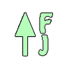

Marcos and Kali
Kali and Marcos
Testing a link
MJPM Icons
 Sort Flower to Joker: The tiles in the rack and the wall are sorted as follows: flowers, 1-9 bams, 1-9 dots, 1-9 craks, winds as N-E-W-S, dragons green, white, red and jokers.
Sort Flower to Joker: The tiles in the rack and the wall are sorted as follows: flowers, 1-9 bams, 1-9 dots, 1-9 craks, winds as N-E-W-S, dragons green, white, red and jokers.
- 
Sort Descending: Sorts the tiles, in the rack, from Joker to the Flower.
-
Sort by Suit: The tiles in the rack and the wall are sorted as flowers, 1-9 bams, green dragon, 1-9 dots, white dragon, 1-9 craks, red dragon, winds, jokers.
 Sort the Rack: Sorts the tiles, in the rack, numerically as follows: flowers, 1 bam, 1 dot, 1 crak, 2 bam, 2 dot, 2 crak etc, winds, dragons, jokers.
Sort the Rack: Sorts the tiles, in the rack, numerically as follows: flowers, 1 bam, 1 dot, 1 crak, 2 bam, 2 dot, 2 crak etc, winds, dragons, jokers.
-
Sort the Wall: Sorts the tiles, in the wall, numerically as follows: flowers, 1 bam, 1 dot, 1 crak, 2 bam, 2 dot, 2 crak etc, winds, dragons, jokers.
 Check the Pattern: Compare the tiles in the rack against the system-stored patterns to see if its a valid pattern. Shows the first pattern found.
Check the Pattern: Compare the tiles in the rack against the system-stored patterns to see if its a valid pattern. Shows the first pattern found.
 Check the Pattern: Compare the tiles in the rack against the system-stored patterns to see if its a valid pattern. Show all the patterns found.
Check the Pattern: Compare the tiles in the rack against the system-stored patterns to see if its a valid pattern. Show all the patterns found.
 Pattern List: Show the list of all current valid patterns.
Pattern List: Show the list of all current valid patterns.